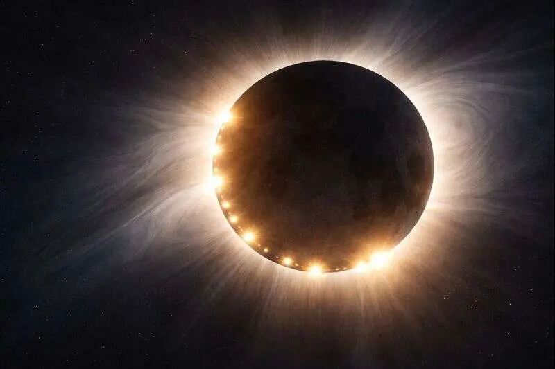
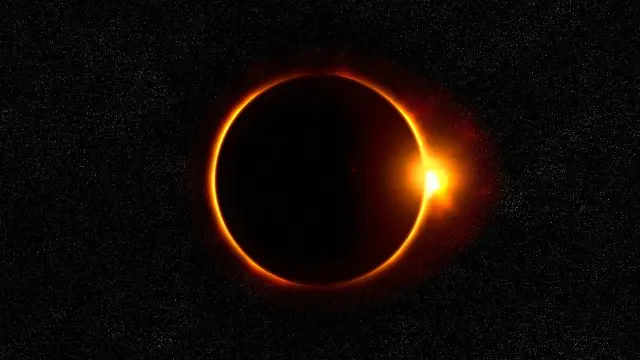
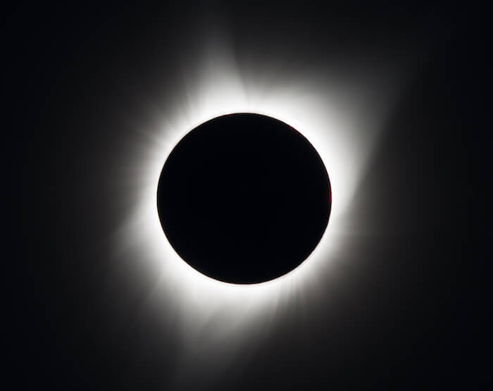
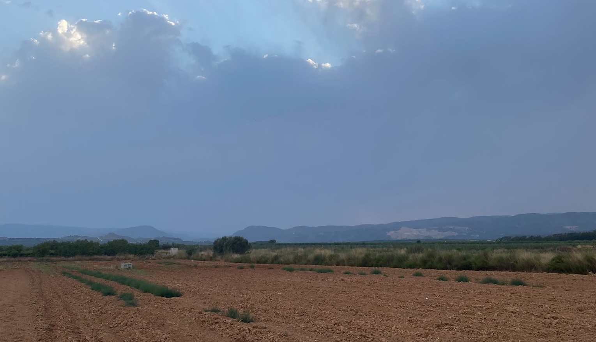

🌞 Sobre este punto
Casica Roger es uno de los puntos recomendados para observar el eclipse solar del 12 de agosto de 2026 desde Villar del Arzobispo.
Su principal ventaja es disponer de un horizonte occidental completamente despejado, permitiendo seguir la evolución del eclipse hasta la puesta del Sol.
🗺️ Información del lugar
0°47'59.91"W
🌞 Horario del eclipse
⏱️ Duración de la totalidad: 1 minuto y 5 segundos.
🌞 Eclipse Solar 2026
Cuenta atrás para el inicio del eclipse desde Casica Roger
Acompañándote durante el eclipse
Todo preparado
Todavía queda tiempo para preparar el material.
Busca un lugar cómodo y comprueba que tienes las gafas homologadas.
✨ ¿Qué verás durante el eclipse?
Sigue paso a paso la evolución del eclipse y descubre los fenómenos que podrás observar desde Casica Roger.
Comienza el eclipse parcial
La Luna comienza a ocultar lentamente el Sol. Desde este momento deben utilizarse las gafas homologadas.

✨ Perlas de Baily
Instantes antes de la totalidad aparecen pequeños destellos de luz al atravesar los valles del relieve lunar.

💎 Anillo de diamante
El último destello del Sol permanece visible durante unos segundos antes de desaparecer por completo.
🌑 TOTALIDAD
20:32:09 – 20:33:14
Durante poco más de un minuto la Luna cubrirá completamente el Sol y será visible la corona solar.
- Venus y otros astros brillantes podrán hacerse visibles.
- El paisaje adquirirá un aspecto crepuscular.
💎 Anillo de diamante
La luz del Sol reaparece anunciando el final de la totalidad.
✨ Perlas de Baily
Los últimos destellos marcan la transición hacia el eclipse parcial.
Puesta de Sol
El Sol se oculta por el horizonte mientras concluyen las últimas fases del eclipse.
🧭 ¿Dónde mirar?
La posición del Sol se actualiza en tiempo real.
Sitúate mirando en la dirección indicada para observar el eclipse.
☀️ El cielo desde Casica Roger
Posición de los astros durante el eclipse solar del 12 de agosto de 2026.

📋 Consejos para la visita
Una buena planificación te permitirá disfrutar del eclipse con mayor comodidad y seguridad.
Antes de salir
- Lleva gafas de observación solar homologadas (ISO 12312-2).
- Consulta la previsión meteorológica antes de desplazarte.
- Lleva agua, protección solar y algo de comida si vas a permanecer varias horas.
Al llegar
- Llega con tiempo suficiente para elegir un buen lugar de observación.
- Evita obstaculizar caminos o accesos.
- Respeta el entorno y deposita los residuos en los lugares adecuados.
Durante el eclipse
- Utiliza siempre protección adecuada para observar el Sol.
- Observa también los cambios de luz y el paisaje que te rodea.
- Disfruta del momento.
Al finalizar
- Abandona el lugar con tranquilidad.
- Asegúrate de no dejar ningún residuo.
- Comparte tu experiencia y tus fotografías del eclipse.
🗺️ Localización
Consulta la ubicación exacta de Casica Roger y planifica tu llegada.
Calculando...
≈ 1 h 30 min · Acceso por camino rural
🌦️ Meteorología
Cargando información meteorológica...
🕶️ Observación segura
Utiliza únicamente gafas solares homologadas ISO 12312-2.
Nunca observes el Sol directamente sin protección adecuada.
📄 Guía de seguridad del eclipse
Descarga nuestra infografía con las recomendaciones básicas para disfrutar del eclipse de forma segura.
⬇️ Descargar infografía